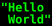

人類社会のすべての構成員の固有の尊厳と平等で譲ることのできない権利とを承認することは、世界における自由、正義及び平和の基礎であるので、
人権の無視及び軽侮が、人類の良心を踏みにじった野蛮行為をもたらし、言論及び信仰の自由が受けられ、恐怖及び欠乏のない世界の到来が、一般の人々の最高の願望として宣言されたので、
人間が専制と圧迫とに対する最後の手段として反逆に訴えることがないようにするためには、法の支配によって人権を保護することが肝要であるので、
諸国間の友好関係の発展を促進することが肝要であるので、国際連合の諸国民は、国連憲章において、基本的人権、人間の尊厳及び価値並びに男女の同権についての信念を再確認し、かつ、一層大きな自由のうちで社会的進歩と生活水準の向上とを促進することを決意したので、